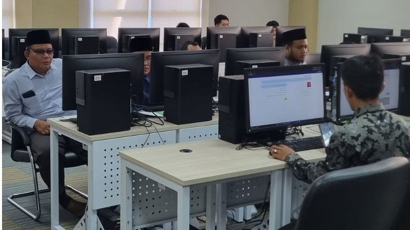
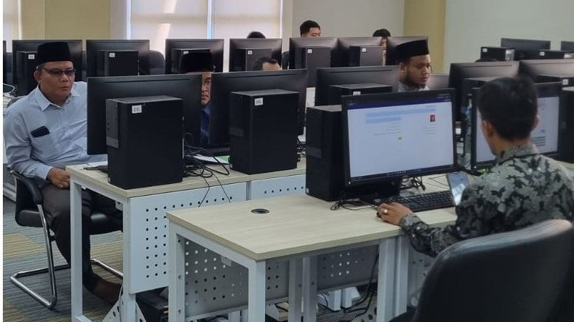

Artikel Populer,
Laboratorium Terpadu berdiri sejak 04 Januari 2020.
Laboratorium Terpadu merupakan salah satu Unit Pelayanan Teknis di
UIN Raden Fatah Palembang yang dalam perkembangannya saat ini UPT
Laboratorium Terpadu mempunyai visi Menjadi laboratorium terpadu yang
terkemuka, terakreditasi, dan berstandar internasional dalam pelayanan,
penelitian, pengujian dan pelatihan serta pengabdian untuk mendukung
UIN Raden Fatah Palembang sebagai universitas riset yang unggul, berstandar
internasional, berwawasan kebangsaan dan berkarakter islami. Komitmen kami
untuk mencapai standar tersebut adalah pada tahun ini Laboratorium Terpadu
sedang mempersiapkan segala sesuatunya untuk sertifikasi pelaksanaan manajemen
mutu ISO 17025:2017 oleh Komite Akreditasi Nasional (KAN).

Laboratorium terpadu terdiri dari 26 laboratorium yakni Biologi,
Fisika, Kimia, Sistem Informasi, UTM, Bahasa, Matematika dan Ekonomi.
Lab Biologi terdiri dari 9 Laboratorium, Lab Fisika terdiri dari 1 Laboratorium,
Lab UTM terdiri dari 1 laboratorium, Lab Kimia terdiri dari 6 Laboratorium,
Lab Matematika terdiri dari 1 Laboratorium, Lab Ekonomi terdiri dari 1 laboratorium,
Lab Bahasa terdiri dari 1 Laboratorium dan Lab Sistem Informasi terdiri dari 6 Laboratorium.
Artikel Populer,
Laboratorium Terpadu berdiri sejak 04 Januari 2020.
Laboratorium Terpadu merupakan salah satu Unit Pelayanan Teknis di
UIN Raden Fatah Palembang yang dalam perkembangannya saat ini UPT
Laboratorium Terpadu mempunyai visi Menjadi laboratorium terpadu yang
terkemuka, terakreditasi, dan berstandar internasional dalam pelayanan,
penelitian, pengujian dan pelatihan serta pengabdian untuk mendukung
UIN Raden Fatah Palembang sebagai universitas riset yang unggul, berstandar
internasional, berwawasan kebangsaan dan berkarakter islami. Komitmen kami
untuk mencapai standar tersebut adalah pada tahun ini Laboratorium Terpadu
sedang mempersiapkan segala sesuatunya untuk sertifikasi pelaksanaan manajemen
mutu ISO 17025:2017 oleh Komite Akreditasi Nasional (KAN).

Laboratorium terpadu terdiri dari 26 laboratorium yakni Biologi,
Fisika, Kimia, Sistem Informasi, UTM, Bahasa, Matematika dan Ekonomi.
Lab Biologi terdiri dari 9 Laboratorium, Lab Fisika terdiri dari 1 Laboratorium,
Lab UTM terdiri dari 1 laboratorium, Lab Kimia terdiri dari 6 Laboratorium,
Lab Matematika terdiri dari 1 Laboratorium, Lab Ekonomi terdiri dari 1 laboratorium,
Lab Bahasa terdiri dari 1 Laboratorium dan Lab Sistem Informasi terdiri dari 6 Laboratorium.
Pentingnya laboratorium pada Fakultas Sains dan Teknologi
di setiap PTKIN pada kementerian Agama RI menjadi hal yang
wajib dipenuhi sebagai layanan akademik kepada masyarakat.
Selain sebagai praktikum mahasiswa, juga dapat dilakukan
untuk penelitian dan pengabdian dosen dan mahasiswa kepada
masyarkat dalam bentuk produk sains yang dapat dipublikasikan
kepada masyarakat. Oleh karena itu, setiap laboratorium harus
mampu dioptimalisasikan dan dimodernkan yang terstandar internasional.
Program revitalisasi ini telah dimulai sejak 2007, sedangkan FST
UIN Raden Fatah Palembang mulai ikut program ini sejak 2017 sampai saat ini.
Oleh karena itu perlu dilakukan workshop untuk memonitoring dan evaluasi
selalu keberadaanya dalam rangka peningkatan upgrading alat-alat laboratorium
dan peningkatan hard skill Sumber Daya Manusia.